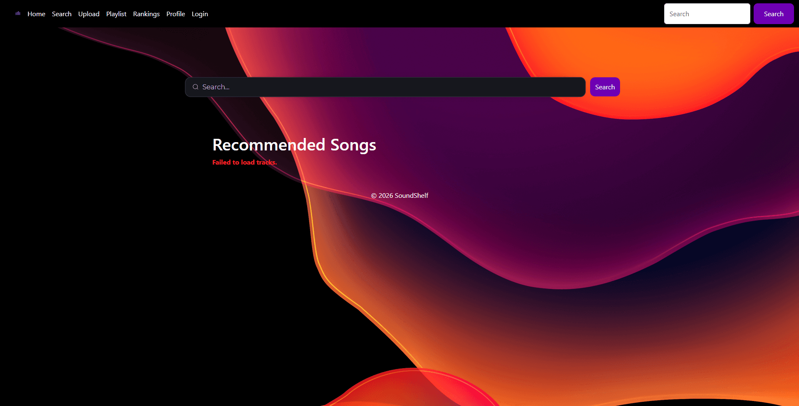
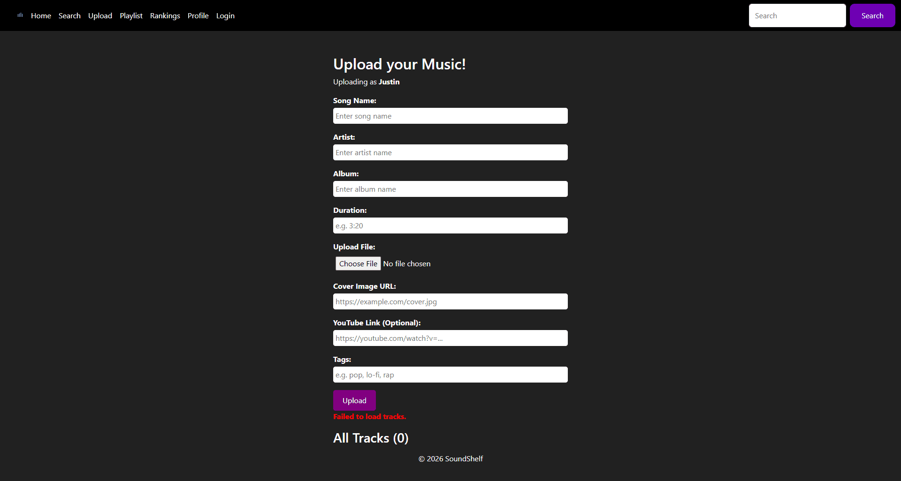

Music discovery / INFO 340
SoundShelf
Selected interfaces for a collaborative music-discovery app.
My contribution
The profile experience
My main focus was the profile page: bringing a listener’s identity, activity, featured playlist, and favorite tracks into one place. This selection highlights the pages I worked on—not the entire team project.

Design notes
The profile page is organized top to bottom as identity (avatar, name, and a short tagline), three activity counts, a featured playlist, favorite tracks, and recently played songs.
If I kept working on this page, I would raise the contrast of the small gray text on the dark background and design what a new listener sees before they have a playlist or favorites.
Other selected pages
I also contributed to the search and upload interfaces through UI styling, HTML, and CSS.


Select any screenshot to view it at full size.